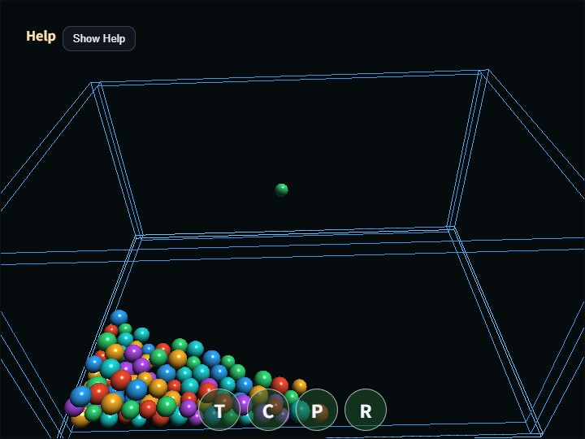

compute_physics_bounce
English | 日本語

概要
- 球体の位置、半径、速度、反発係数、摩擦係数、色をstorage bufferへ保持します。
- Compute Shaderでは1 invocationが1球体を担当し、重力積分、床と壁の衝突、球体同士の衝突応答を計算します。
- src/dstのping-pong bufferを使い、全invocationが同じ前状態を読んで別々の球体へ書き込みます。
- Compute結果はCPUへreadbackせず、vertex shaderが同じstorage bufferを直接読んで球体をinstance描画します。
- 元のscene寸法を1/100へ縮小し、1 unitを1 mとして地球重力の1/6に相当する約1.634 m/s²を使用します。
- 容器は幅0.76 m、奥行き0.50 m、球体半径は約1.25〜1.8 cmです。
- 既定の96球はWireframe枠の上端付近、高さ約0.22〜0.25 mから落下します。
- webgコアのPhysicsSpaceや描画クラスは変更しません。
- WebgAppへ
computeFrame: trueを指定し、onComputeFramehandlerからCompute / Render Passを発行します。 - samples 配下の PingPongBuffer で src/dst index を管理し、timestamp query で全substepのGPU Compute時間とRender Pass時間を取得します。
実行方法
- 実行ファイルは ./compute_physics_bounce.html です
- WebGPU に対応したブラウザで開き、必要に応じて help panel や HUD と合わせて確認してください
確認ポイント
- 既存samples/physics_bounceのCPU剛体版に対するCompute Shader比較用サンプルです。
- Pでpause、Rでreset、Cで球体同士の衝突をON/OFFできます。
- TouchボタンのT/C/P/Rからも、傾斜、衝突、pause、resetを操作できます。
- URLの?count=で球数を指定できます。既定96、最大512です。
- 総当たり判定のため計算量はO(N^2)です。空間グリッドなどの高速ブロードフェーズは行いません。
- 球体は回転自由度を持たず、線形速度だけを解く簡易剛体です。
- Help panelのCompute load、Render load、GPU load、JS loadを使い、球数変更時にどの区間が増えるか比較できます。